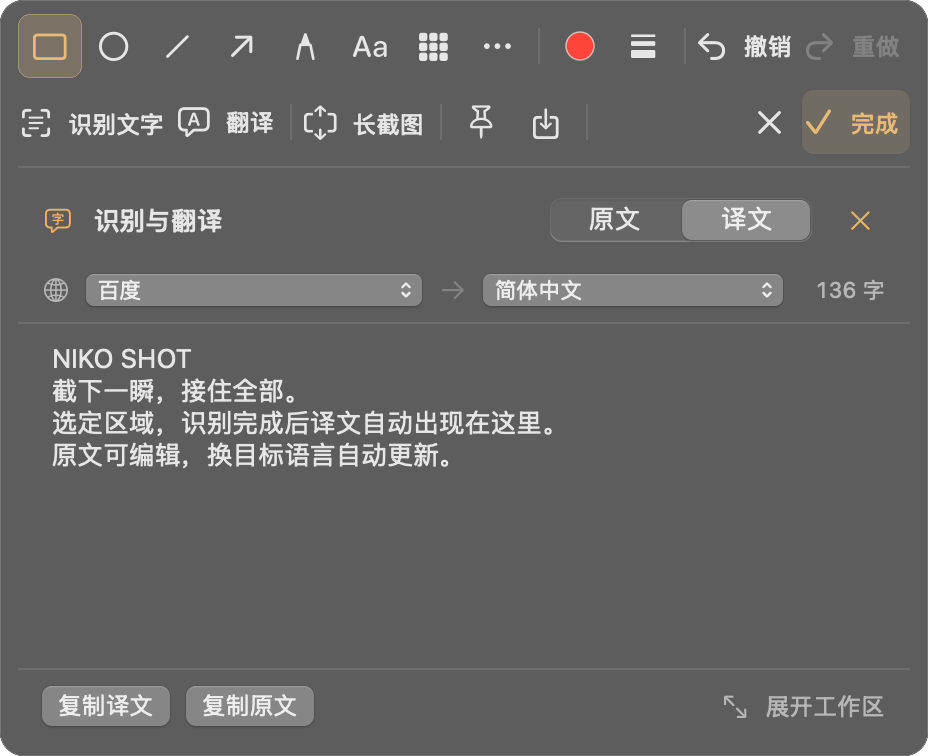
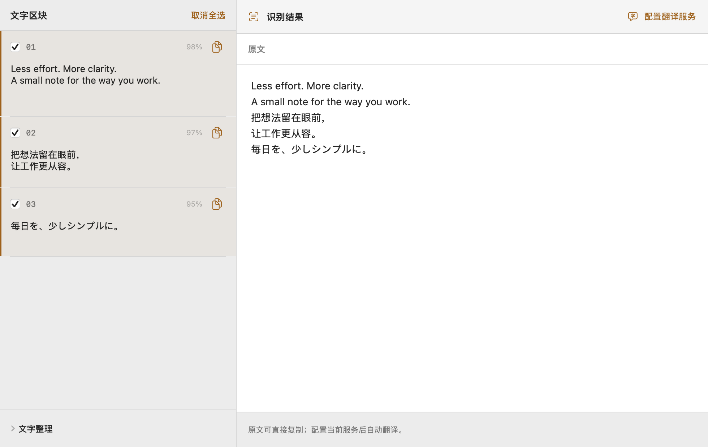

表达，落到细节。
矩形、直线、箭头和画笔直接可点，撤销、重做清楚可见。「识别文字」与「翻译」各自标明用途。配置好当前服务后，译文自动接在截图下方；未配置时保留原文，直接编辑与复制。换语言自动更新。完成点右侧对号，截图自动复制。
矩形 · 椭圆 · 直线 · 箭头 · 画笔 · 马赛克 · 模糊 · 文字 · 便签 · 高亮 · 放大镜 · 序号

拖动框选，按 A 画箭头，Enter 确认。
原创练习图。本页只编辑图片，不读取屏幕、不运行 OCR 或翻译。
先留住画面，再整理重点。复制、保存，或让这张图继续往下长。
矩形、直线、箭头和画笔直接可点，撤销、重做清楚可见。「识别文字」与「翻译」各自标明用途。配置好当前服务后，译文自动接在截图下方；未配置时保留原文，直接编辑与复制。换语言自动更新。完成点右侧对号，截图自动复制。
矩形 · 椭圆 · 直线 · 箭头 · 画笔 · 马赛克 · 模糊 · 文字 · 便签 · 高亮 · 放大镜 · 序号

点选窗口后直接开始，透明选区一直留在实时画面上。滚动时按需取图，边滚边拼；旁边的原生半透明预览跟随长图增长，也能切换全图查看。
截图底部的「长截图」沿当前选区继续；停下后自动收取最后一帧，再回到标注与复制。开启辅助功能后，选窗口自动定位主滚动内容，避开固定顶栏、底栏与侧栏。手动框选保留你选定的范围，正文的空白边距也完整留下。固定头部、尾部只保留一次；瞬时无重叠的画面直接略过，已截内容会保留。自动模式小步渐进，支持暂停和继续。
看看长截图实时预览录下区域、窗口或屏幕。暂停后继续，选择系统声音、麦克风与摄像头画中画，导出 MP4 或 GIF。
常用内容，留在手边。贴图置顶、历史 OCR 搜索、重新编辑和拖出图片。
接入 Shortcuts、URL 与 CLI识别、编辑，和译文一起核对。系统字体与原生控件，浅色深色都顺眼。

截图、录屏与 Vision OCR 在 Mac 上处理，历史保存在本机。翻译将所选文字发送给你配置的服务；截图文字卡片与完整工作区共用自动翻译设置，默认开启，可在设置关闭。识别完成自动显示译文，换语言或服务后自动更新。
了解密钥与翻译请求macOS 14 或更新版本。
M 芯片与 Intel 各有独立安装包。
已选：M 芯片 · arm64。可在苹果菜单「关于本机」查看芯片或处理器。
按芯片选择安装包，下载最新版本。
打开 DMG，将 niko-shot 拖入「应用程序」。首次打开若收到系统提示，可按 Apple 的打开说明在「隐私与安全性」中处理。
截图和录屏需要屏幕录制权限。麦克风、摄像头在启用对应录屏功能时使用；自动滚动按需使用辅助功能权限。应用内提供申请与检查入口，不申请输入监控。
需要。应用直连你的 API 服务，不附带共享密钥。各家申请、计费和凭据类型不同，请查看 官方接入指南。未启用认证的自托管 LibreTranslate 可免密配置。
下载入口指向最新正式 Release。M 芯片与 Intel 分别提供 DMG 和 ZIP，请选择与你的 Mac 芯片对应的版本。更新记录、文件校验与构建信息可在同一发布页查看。
在 GitHub Issues 提交系统版本、复现步骤与脱敏示例。构建使用 Xcode 和 XcodeGen，详见 README；Actions 保留自动构建结果。